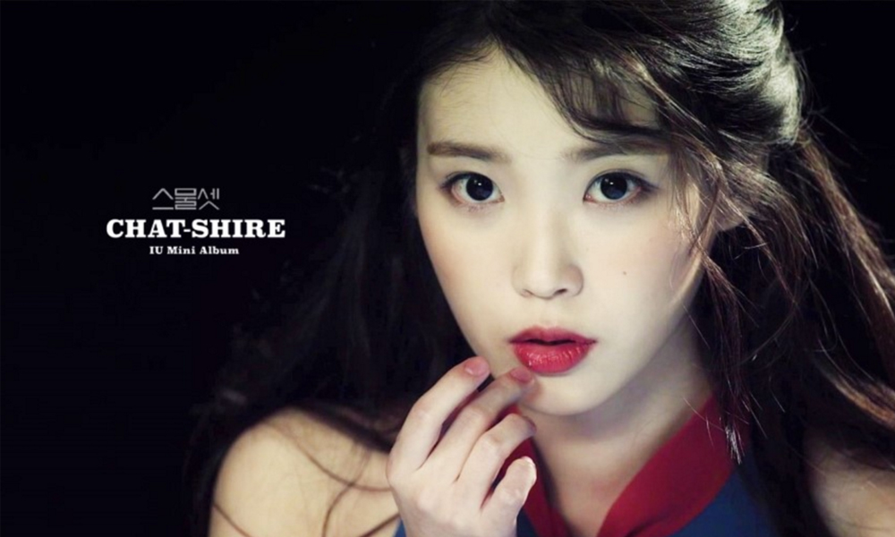

Boo
Think about it
Boo Boo Boo True color present
(0:08) 아이유 아이유 아이유 아이유 아이유 아이유 아.이.유.짱
내가 별로라는 외모를 갖고 있는 너라고
많이 안 좋아하는 버릇도 모조리 다 갖추고 있어
어쩜 스치기만 해도 엄청나게 싫은 얼굴로 (No)
널 쳐다봤어 (미안하긴 했어)
니가 여자친구 없는 이유를 알겠어
다른 애들보다 조금 수준 떨어져
하지만 며칠 뒤에 어느새 나도 모르게
거짓말처럼 (네 생각만 나)
You`re my Boo 내게 사랑을 줘 한 입만
Boo ~ (아이유) 맛있는 사랑을 할 거야
Boo ~ (아이유) 아이스크림보다 달콤한
My boo My My boo
(언제나 나는) 난 너만 사랑하고파
(그냥) 그냥 네 곁에만 있고파
(아무) 아무것도 난 필요 없는걸
My boo My My boo Boo
괜히 콧대 높고 쓸데없이 눈만 높아서
나를 지나만 가는 남자도 모조리 다 점수를 매겨
(이러네 저러네 말하고)
꼼꼼하게 흠을 잡아도 (Uh)
좀 외로웠어 (바보같긴 했어)
내가 남자친구 없는 이유를 알겠어
다른 애들보다 너무 재기만 했어
하지만 며칠 뒤에 어느 새 나도 모르게
거짓말처럼 (네 생각만 나)
You`re my Boo 내게 사랑을 줘 한 입만
Boo ~ (아이유) 맛있는 사랑을 할 거야
Boo ~ (아이유) 아이스크림보다 달콤한
My boo My My boo
(언제나 나는) 난 너만 사랑하고파
(그냥) 그냥 네 곁에만 있고파
(아무) 아무것도 난 필요 없는걸
My boo My My boo
햇살이 좋은 날에 살짝 바람 부는 날에
단둘이 단둘이 네 손을 꼭 잡고
걷고 싶은 게 간절하니깐 너무나 신기해
You hoo my boy
You`re my Boo 하나만 물어보고 싶어
Boo ~ (아이유) 내 맘과 네 맘이 같다면
Boo ~ (아이유) 지금부터 나를 불러 줘
My boo My My boo
(언제나 나는) 난 너만 사랑하고파
(그냥) 그냥 네 곁에만 있고파
(아무) 아무것도 난 필요 없는걸
My boo My My boo Boo